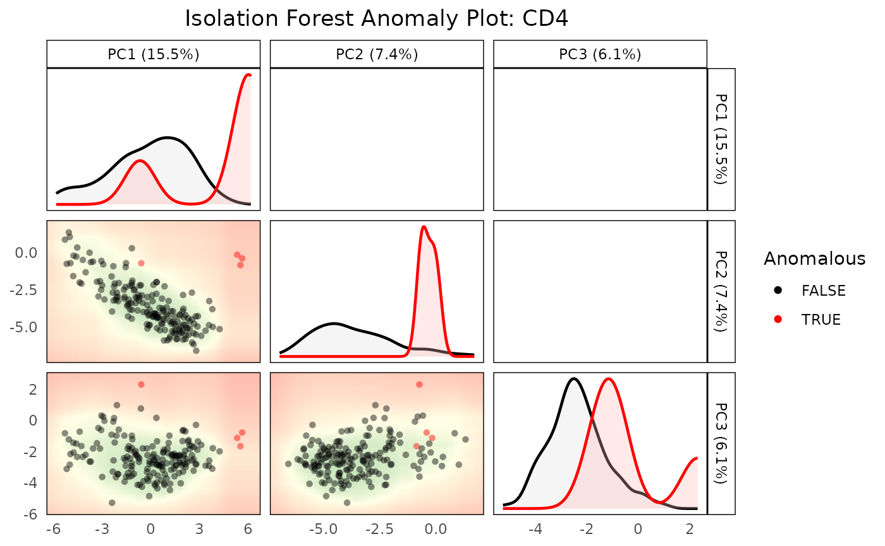

R/detectAnomaly.R, R/plot.detectAnomalyObject.R
detectAnomaly.RdThis function detects anomalies in single-cell data by projecting the data onto a PCA space and using an isolation forest algorithm to identify anomalies.
This S3 plot method generates faceted scatter plots for specified principal component (PC) combinations within an anomaly detection object. It visualizes the relationship between specified PCs, highlights anomalies detected by the Isolation Forest algorithm, and provides a background gradient representing anomaly scores.
detectAnomaly(
reference_data,
query_data = NULL,
ref_cell_type_col,
query_cell_type_col = NULL,
cell_types = NULL,
pc_subset = 1:5,
n_tree = 500,
anomaly_threshold = 0.6,
assay_name = "logcounts",
max_cells_query = 5000,
max_cells_ref = 5000,
...
)
# S3 method for class 'detectAnomalyObject'
plot(
x,
cell_type = NULL,
pc_subset = NULL,
data_type = c("query", "reference"),
n_tree = 500,
upper_facet = c("blank", "contour", "ellipse"),
diagonal_facet = c("density", "ridge", "boxplot", "blank"),
max_cells_ref = NULL,
max_cells_query = NULL,
...
)A SingleCellExperiment object containing numeric expression matrix for the reference cells.
An optional SingleCellExperiment object containing numeric expression matrix for the query cells.
If NULL, then the isolation forest anomaly scores are computed for the reference data. Default is NULL.
A character string specifying the column name in the reference dataset containing cell type annotations.
A character string specifying the column name in the query dataset containing cell type annotations.
A character vector specifying the cell types to include in the plot. If NULL, all cell types are included.
A numeric vector specifying the indices of the PCs to be included in the plots. If NULL, all PCs
in reference_mat_subset will be included.
An integer specifying the number of trees for the isolation forest. Default is 500
A numeric value specifying the threshold for identifying anomalies, Default is 0.6.
Name of the assay on which to perform computations. Default is "logcounts".
Maximum number of query cells to include in the plot. If NULL, all available query cells are plotted. Default is NULL.
Maximum number of reference cells to include in the plot. If NULL, all available reference cells are plotted. Default is NULL.
Additional arguments passed to the `isolation.forest` function.
A list object containing the anomaly detection results from the detectAnomaly function.
Each element of the list should correspond to a cell type and contain reference_mat_subset, query_mat_subset,
var_explained, and anomaly.
A character string specifying the cell type for which the plots should be generated. This should
be a name present in x. If NULL, the "Combined" cell type will be plotted. Default is NULL.
A character string specifying whether to plot the "query" data or the "reference" data. Default is "query".
Either "blank" (default), "contour", or "ellipse" for the upper facet plots.
Either "density" (default), "ridge", "boxplot" or "blank" for the diagonal plots.
A list containing the following components for each cell type and the combined data:
Anomaly scores for each cell in the query data.
Logical vector indicating whether each cell is classified as an anomaly.
PCA projections of the reference data.
PCA projections of the query data (if provided).
Proportion of variance explained by the retained principal components.
The S3 plot method returns a GGally::ggpairs object representing the PCA plots with anomalies highlighted.
This function projects the query data onto the PCA space of the reference data. An isolation forest is then built on the reference data to identify anomalies in the query data based on their PCA projections. If no query dataset is provided by the user, the anomaly scores are computed on the reference data itself. Anomaly scores for the data with all combined cell types are also provided as part of the output.
The function extracts the specified PCs from the given anomaly detection object and generates
scatter plots for each pair of PCs. It uses GGally to create a pairs plot where each facet
represents a pair of PCs. The plot includes:
1. Lower facets: Scatter plots with a background gradient representing anomaly scores from green (low) to red (high) 2. Diagonal facets: Density, ridge, boxplot or blank visualizations showing the distribution of each PC, separated by anomaly status 3. Upper facets: Blank panels by default, or contour/ellipse plots separated by anomaly status if specified
Liu, F. T., Ting, K. M., & Zhou, Z. H. (2008). Isolation forest. In 2008 Eighth IEEE International Conference on Data Mining (pp. 413-422). IEEE.
plot.detectAnomalyObject
detectAnomaly
# Load data
data("reference_data")
data("query_data")
# Store PCA anomaly data
anomaly_output <- detectAnomaly(reference_data = reference_data,
query_data = query_data,
ref_cell_type_col = "expert_annotation",
query_cell_type_col = "SingleR_annotation",
pc_subset = 1:5,
n_tree = 500,
anomaly_threshold = 0.6)
# Plot the output for a cell type
plot(anomaly_output,
cell_type = "CD4",
pc_subset = 1:3,
data_type = "query")
